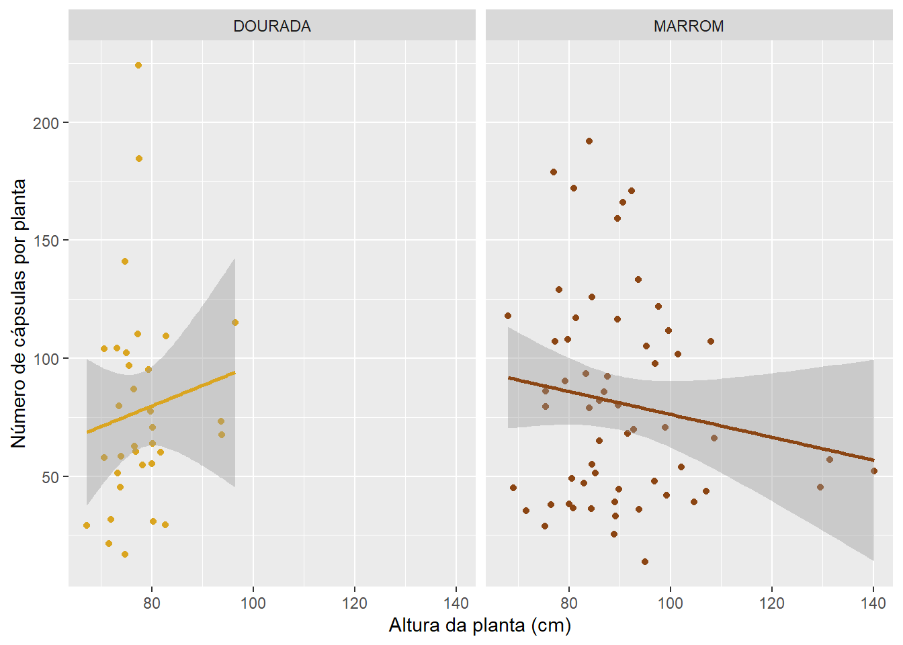
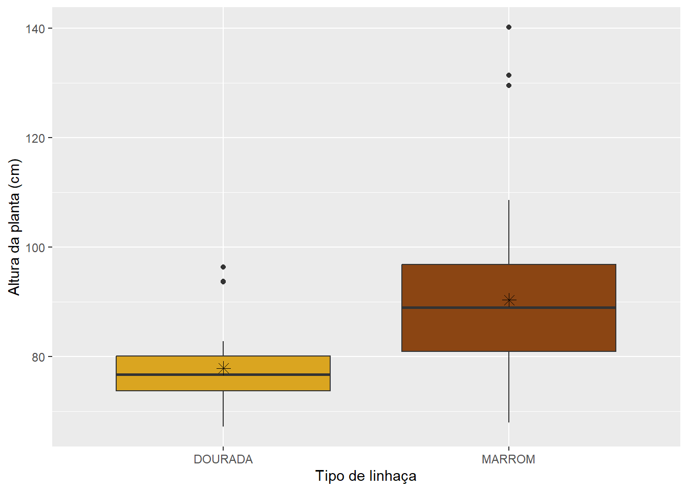
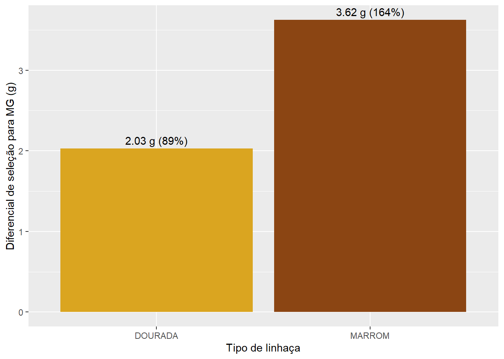

# número total de grãos (NG), comprimento médio (CG) e largura média (LG) para cada plantagraos_limpo <- graos |>select(img, length, width) |>separate_wider_delim(img,delim ="_",names ="IMG",too_many ="drop")graos_planta <- graos_limpo |>group_by(IMG) |>summarise(NG =n(),CG =mean(length, na.rm =TRUE),LG =mean(width, na.rm =TRUE))
2.2 Arquivo Cápsulas
# número total de cápsulas (NC) para cada planta# extração da identificação das plantas (número no início da coluna img)cap_planta <- cap |>group_by(img) |>summarise(NC =n() ) |>separate_wider_delim( img,delim ="_",names ="IMG",too_many ="drop")
2.3 Unificação
Antes da unificação, a coluna IMG de graos_planta e cap_planta foi convertida de texto para número, para ficar com o mesmo tipo da coluna IMG de laboratorio.
Após a unificação, duas inconsistências na altura de planta (AP) foram tratadas:
quatro plantas do genótipo G137 (P1 a P4) tinham AP registrada em metros (1,09 a 1,16) e foram convertidas para centímetros;
a planta P2 do genótipo G226 tinha AP = 17 cm, enquanto as demais plantas do genótipo mediam entre 87 e 94 cm.
# junção das estatísticas calculadas (NG, CG, LG, NC) ao data frame principal 'laboratorio'.# o resultado é uma tabela onde cada linha corresponde a uma planta (img) com todas as suas variáveisgraos_planta <- graos_planta |>mutate(IMG =as.numeric(IMG))cap_planta <- cap_planta |>mutate(IMG =as.numeric(IMG))dados_plantas <-left_join(lab, graos_planta, by ="IMG")dados_plantas <-left_join(dados_plantas, cap_planta, by ="IMG")# metros -> cm (G137)dados_plantas <- dados_plantas |>mutate(AP =if_else(AP <10, AP *100, AP))# valor inconsistente -> NA (G226, planta P2)dados_plantas <- dados_plantas |>mutate(AP =if_else(GEN =="G226"& PLANTA =="P2", NA_real_, AP))
3. Análise e Consolidação por Genótipo
3.1 Agregação
Dos 120 genótipos, 27 não têm nenhuma medida no arquivo laboratorio nem imagens de grãos e cápsulas. Para esses genótipos, a média de todas as variáveis resulta em NaN, e por isso eles foram removidos. O conjunto final tem 93 genótipos (33 DOURADA e 60 MARROM).
# média das variáveis numéricas por genótipodados_genotipo <- dados_plantas |>group_by(GEN, TIPO) |>summarise(across(where(is.numeric) &!IMG,.fns = \(x) mean(x, na.rm =TRUE)),.groups ="drop" ) |># remove genótipos sem nenhum dado (NaN em todas as variáveis)filter(!is.na(AP) |!is.na(MG))
3.2 Junção Final
# adicionar dados de massa de mil grãos (mmg) ao data frame de genótiposdados_final <- dados_genotipo |>left_join(mmg, by =c("GEN", "TIPO"))dados_final
4.1 Como a altura da planta se relaciona com o número de cápsulas?
# gráfico de dispersão com um painel por tipodados_final |>ggplot(aes(x = AP, y = NC, color = TIPO)) +geom_point() +geom_smooth(method ="lm") +facet_wrap(~TIPO) +scale_color_manual(values =c("DOURADA"="goldenrod", "MARROM"="saddlebrown")) +labs(x ="Altura da planta (cm)", y ="Número de cápsulas por planta") +theme(legend.position ="none")

# correlação entre AP e NC para cada tipo de linhaçadados_final |>filter(!is.na(AP) &!is.na(NC)) |>summarise(r =cor(AP, NC),n =n(),.by = TIPO )
# A tibble: 2 × 3
TIPO r n
<chr> <dbl> <int>
1 DOURADA 0.127 33
2 MARROM -0.154 59
A relação entre altura da planta e número de cápsulas é fraca nos dois tipos: levemente positiva nos genótipos DOURADA (r = 0,13) e levemente negativa nos genótipos MARROM (r = −0,15). A grande dispersão dos pontos em torno das retas indica que a altura não é um bom indicador do número de cápsulas.
4.2 Há indícios de que genótipos do tipo “DOURADA” e “MARROM” diferem em relação à altura de planta?
# boxplot da altura por tipodados_final |>ggplot(aes(x = TIPO, y = AP, fill = TIPO)) +geom_boxplot() +stat_summary(fun = mean, geom ="point",shape =8, size =3, color ="black") +scale_fill_manual(values =c("goldenrod", "saddlebrown")) +labs(x ="Tipo de linhaça", y ="Altura da planta (cm)") +theme(legend.position ="none")

# resumo da altura por tipodados_final |>filter(!is.na(AP)) |>summarise(media =mean(AP),mediana =median(AP),dp =sd(AP),n =n(),.by = TIPO )
# A tibble: 2 × 5
TIPO media mediana dp n
<chr> <dbl> <dbl> <dbl> <int>
1 DOURADA 77.9 76.8 6.53 33
2 MARROM 90.4 89.0 14.0 60
Os genótipos MARROM são, em média, cerca de 12 cm mais altos que os do tipo DOURADA (90,4 cm contra 77,9 cm) e também mais variáveis (desvio-padrão de 14,0 cm contra 6,5 cm).
4.3 Quais os top 5 genótipos para produção de grãos (MG) de cada tipo de linhaça?
# cinco maiores valores de MG dentro de cada tipotop5mg <- dados_final |>group_by(TIPO) |>slice_max(MG, n =5) |>ungroup() |>select(TIPO, GEN, MG)top5mg
G5, G56, G23, G18 e G1, no tipo DOURADA, e G4, G2, G223, G63 e G12, no tipo MARROM.
4.4 Diferencial de seleção
O diferencial de seleção (ds) indica quanto os genótipos selecionados superam a média da população. Calculado por: DS = média dos top 5 - média geral
# média geral de MG por tipo (todos os genótipos)mg_media_geral <- dados_final |>summarise(mg_media_geral =mean(MG, na.rm =TRUE), .by = TIPO)# média de MG dos top 5 por tipomedia_top5 <- top5mg |>summarise(media_top5 =mean(MG), .by = TIPO)# juntar e calcular o diferencial de seleção ds <-left_join(mg_media_geral, media_top5, by ="TIPO") |>mutate(DS = media_top5 - mg_media_geral,DS_perc = DS / mg_media_geral *100 )ds
# gráfico de barras do diferencial de seleçãoggplot(ds, aes(x = TIPO, y = DS, fill = TIPO)) +geom_col() +geom_text(aes(label =paste0(round(DS, 2), " g (", round(DS_perc), "%)")),vjust =-0.5) +scale_fill_manual(values =c("goldenrod", "saddlebrown")) +labs(x ="Tipo de linhaça", y ="Diferencial de seleção para MG (g)") +theme(legend.position ="none")

Os dois tipos têm média geral de MG semelhante (2,28 e 2,20), mas o diferencial de seleção dos genótipos MARROM é quase o dobro do observado nos genótipos DOURADA, o que indica maior variabilidade para MG entre os genótipos MARROM.
5. Conclusão
A altura da planta tem uma relação fraca com o número de cápsulas nos dois tipos de linhaça (r = 0,13 em DOURADA e r = −0,15 em MARROM), não sendo um bom indicador dessa característica.
Os dois tipos diferem em relação à altura: as plantas do genótipos MARROM são, em média, cerca de 12 cm mais altas que as DOURADA (90,4 cm contra 77,9 cm) e apresentaram maior variação.
Para a produção de grãos por planta, destacam-se os genótipos G5, G56, G23, G18 e G1, no tipo DOURADA, e G4, G2, G223, G63 e G12, no tipo MARROM. Apesar da média geral semelhante entre os dois tipos, o diferencial de seleção foi maior no tipo MARROM (3,62 g) do que no DOURADA (2,03 g), o que sugere maior potencial de ganho com a seleção para MG entre os genótipos MARROM.